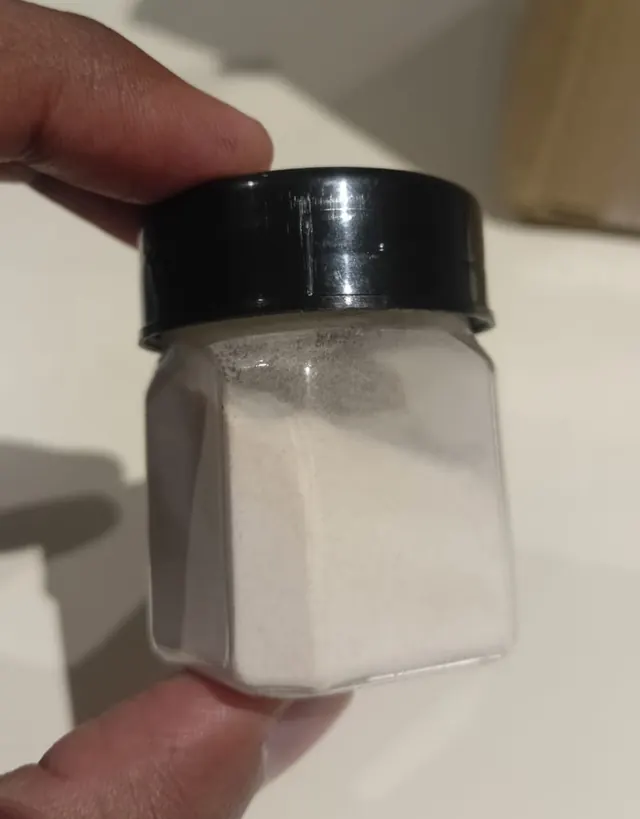
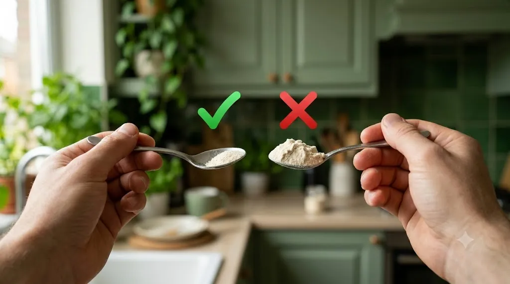

Do not use if you're allergic to any of these
- Pineapple
- Latex
- Birch pollen
- Grass pollen
- Celery
- Carrots
- Fennel
These share similar proteins with bromelain, so the risk of a cross-reaction is high.
HIZLI ESCALA LLP
Official usage, safety and dosage guide for PineMagic Bromelain 2400 GDU, 15 g high-purity enzyme powder.

Correct dosage

Use only 1 half-spoon (approx. 250–500 mg) once per day.
A specific small steel measuring spoon is provided inside the 15 g container. Always use that spoon, not a kitchen teaspoon, which holds far more.
Critical: never mix with hot water, tea or hot liquids.
Heat destroys the active enzymes completely, and the powder will no longer work.
Bromelain works in two different ways, so the timing changes with your reason for taking it. Choose yours.
Take your half-spoon immediately before or right after eating. With food in your stomach, bromelain helps break down the proteins in your meal.
Take it either 30 minutes before a meal or at least 2 hours after one. With no food to work on, bromelain is absorbed into your bloodstream, where it can act on swelling, joint pain and sinus congestion.
Either way, it's still one half-spoon a day.
Bromelain is a group of protein-digesting enzymes from the pineapple plant. Research and traditional use point to these areas. It's a food supplement, not a medicine, and results vary from person to person.
Historically used to help ease soft-tissue swelling, joint stiffness and sprains, and for arthritis comfort.
May help reduce the swelling and congestion that come with chronic sinusitis and allergies, making it easier to breathe.
Helps break proteins down into amino acids, which may relieve bloating, gas and indigestion.
Reduces platelet clumping, which may support healthy blood circulation. This same effect is why it must not be combined with blood thinners.
Bromelain is natural, but it isn't safe for everyone.
These share similar proteins with bromelain, so the risk of a cross-reaction is high.
Avoid bromelain completely if you take blood thinners such as warfarin, Pradaxa (dabigatran) or aspirin, or NSAID painkillers such as ibuprofen, diclofenac or naproxen. Bromelain has an antiplatelet effect, so together they significantly increase your risk of bleeding.
Taking antibiotics such as amoxicillin or tetracycline? Bromelain can increase how much of the antibiotic your body absorbs. Ask your doctor before combining them.
14days
Stop taking bromelain at least 14 days (2 weeks) before any scheduled surgery or dental procedure, and tell your surgeon or dentist that you've been taking it.
Not recommended during pregnancy or while breastfeeding, or for children, unless a doctor recommends it.
May cause mild nausea, diarrhoea or vomiting, or heavier-than-normal menstrual bleeding, mostly when taken in high doses.
Keep it in a cool, dry place away from direct sunlight, with the lid closed tightly after each use. Heat and moisture weaken the enzyme, so keep it away from the stove and always use a dry spoon.
Use it by the best-before date printed on your jar's label. Stored as above, the powder keeps its strength until that date. At one half-spoon a day, a 15 g jar lasts about one to two months.
No. Stick to one level half-spoon a day, even if you don't notice a difference straight away. Higher doses make side effects such as nausea, diarrhoea and heavier periods more likely, and add to the bleeding risk.
Skip it and take your next half-spoon at the usual time the next day. Don't take two doses to make up for it.
No. Warm drinks can still damage the enzymes. Use plain water at normal room temperature.
Check the drug interactions above first. If you take any regular medicine, ask your doctor or pharmacist before starting bromelain.